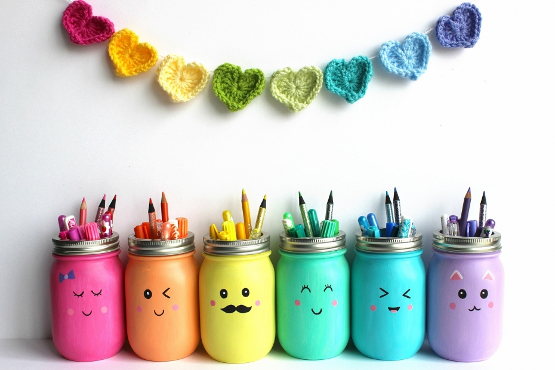
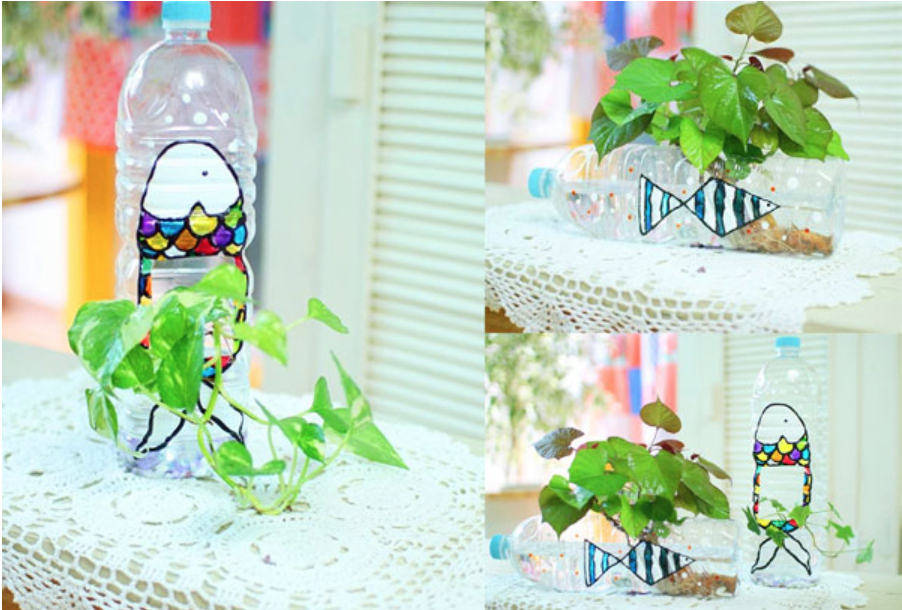
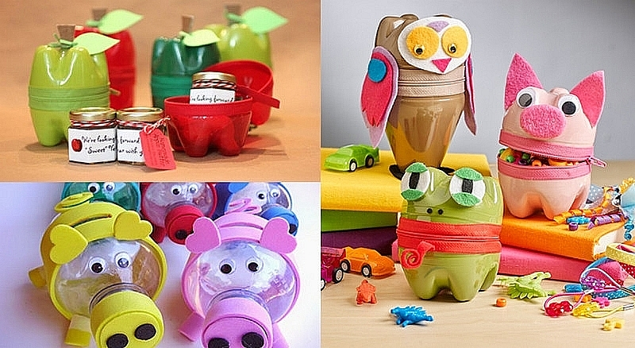
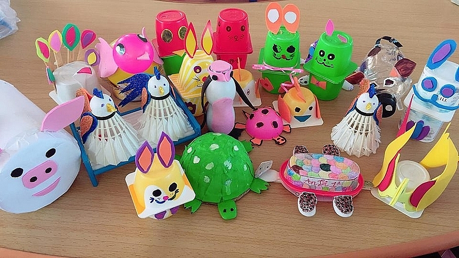
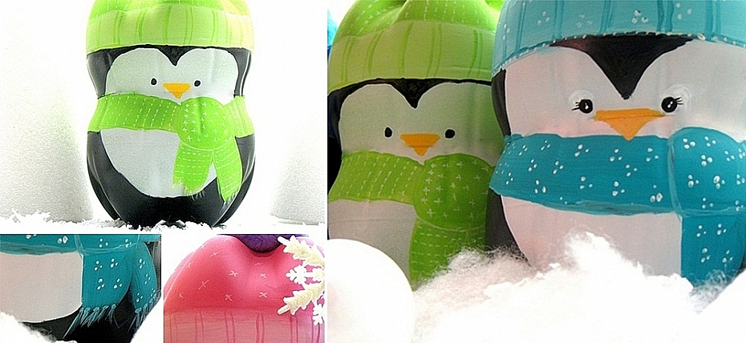
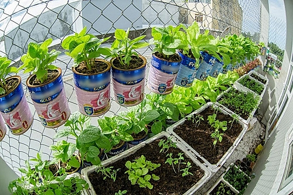
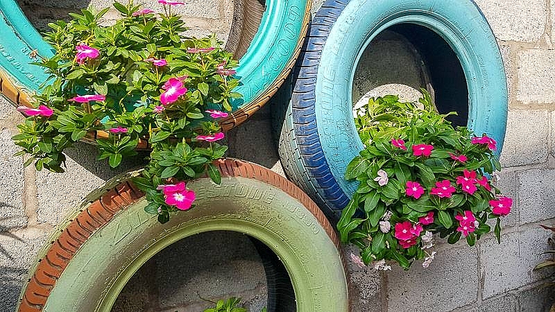

19/04/2022 Dự án > Ý tưởng > Bảo vệ môi trường từ các món đồ tái chế
Xu hướng sống xanh với các sản phẩm được tái chế từ rác thải, nhựa hay thủy tinh được ủng hộ trên toàn thế giới. Xu hướng này mang đến các ưu điểm như tận dụng được nguồn nguyên liệu sẵn có, bảo vệ môi trường và tiết kiệm chi phí. Dưới đây là một số cách tái chế rác thải thành các vật dụng hữu ích cho gia đình.
Nhựa là loại rác thải khó phân hủy nhất, khiến cho vấn nạn ô nhiễm môi trường ngày càng trầm trọng.
Số lượng chai nhựa chúng ta sử dụng trong cuộc sống ngày càng nhiều, từ nước giải khát, chai đựng
dầu ăn, sữa…
Đối với cách tái chế rác thải nhựa này, bạn có thể dùng chai nhựa, cốc uống nước nhựa, hộp nhựa để
làm chậu trồng cây.
Với hộp nhựa, lọ mỹ phẩm nhựa nhỏ có thể trồng cây cảnh mini như sen đá, xương rồng, cẩm nhung… bên cửa sổ. Với cốc uống nước bằng nhựa, bạn có thể trồng các loại cây thủy sinh như trầu bà, ngọc ngân… treo trên tường hay trước cửa nhà.
Việc tái chế chai nhựa thành đồ trang trí mang đến các ưu điểm như giúp bạn tiết kiệm chi phí và có được các món đồ đẹp mắt.
Trước khi thực hiện, bạn cần chuẩn bị thêm các vật dụng và nguyên liệu kèm theo để giúp hoàn thiện đồ trang trí từ rác thải. Bên cạnh đó, quá trình tác chế này còn là một cách thiết thực để bạn giáo dục con cái về sự tiết kiệm và khơi gợi khả năng sáng tạo trong trẻ.
Việc tái chế các chai nhựa, giấy bỏ đi... thành đồ chơi cho bé góp phần bảo vệ môi trường. Các đồ chơi con vật, ô tô,... từ rác thải chắc chắn sẽ tạo hứng thú cho các bé.
  Có rất nhiều món đồ sau khi hỏng hóc vẫn có thể biến thành các vật dụng khác cho gia đình bạn. Đối với các can nhựa lớn, bạn có thể cắt đôi chúng theo đường vát xéo để làm hốt rác.
Bạn cũng có thể tận dụng lốp xe tải không dùng đến làm thành giường ngủ cho thú cưng hay bồn trồng cây. Đối với việc tái chế quần áo cũ, bạn bện lại thành thảm chùi chân hoặc thảm lót cho thú cưng cũng rất hữu ích.
Tuy nhiên, trong quá trình tái chế các rác thải từ nhựa, bạn cần đặc biệt quan tâm đến yếu tố vệ sinh, vì các sản phẩm này đều đã qua sử dụng và có thể tồn đọng nhiều mùi hôi, bụi bẩn và vi khuẩn gây hại.